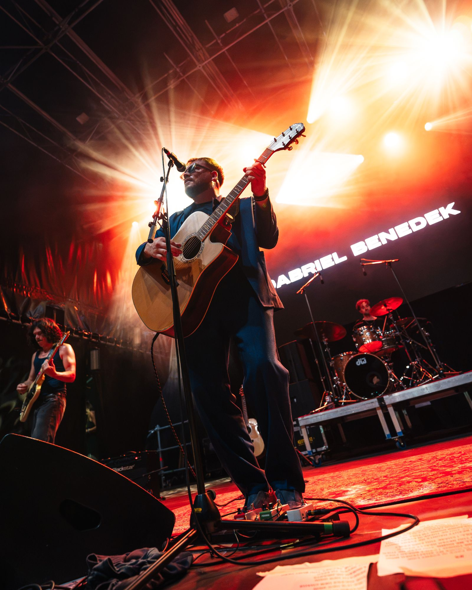
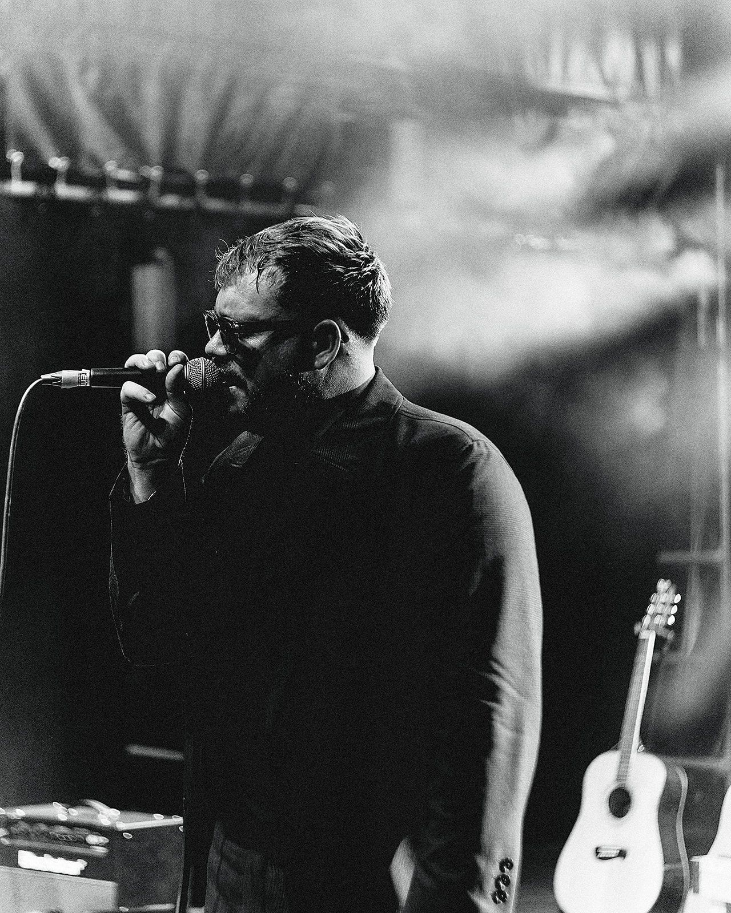
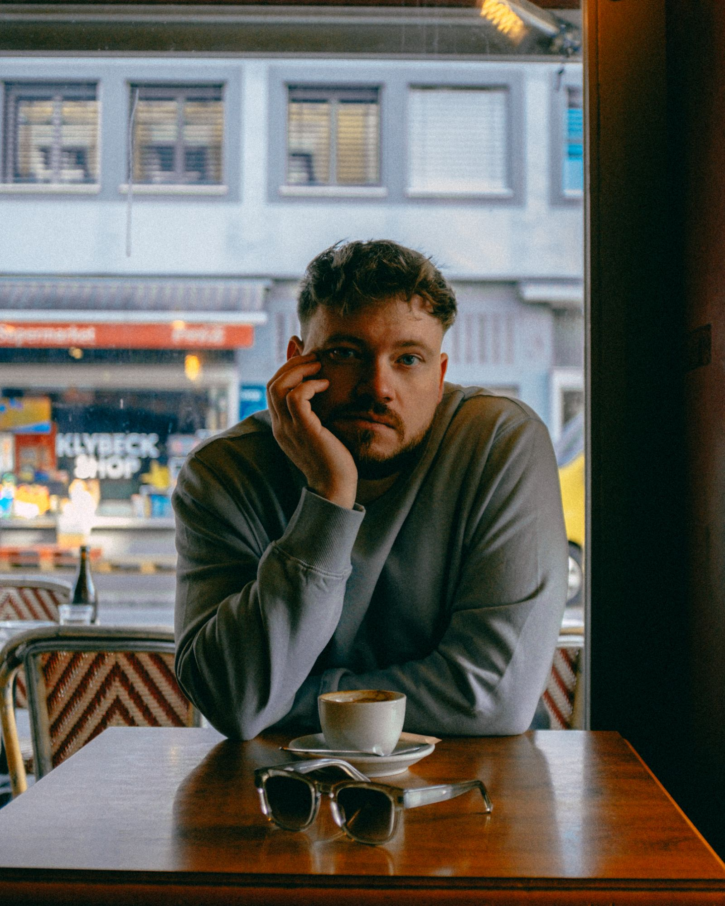
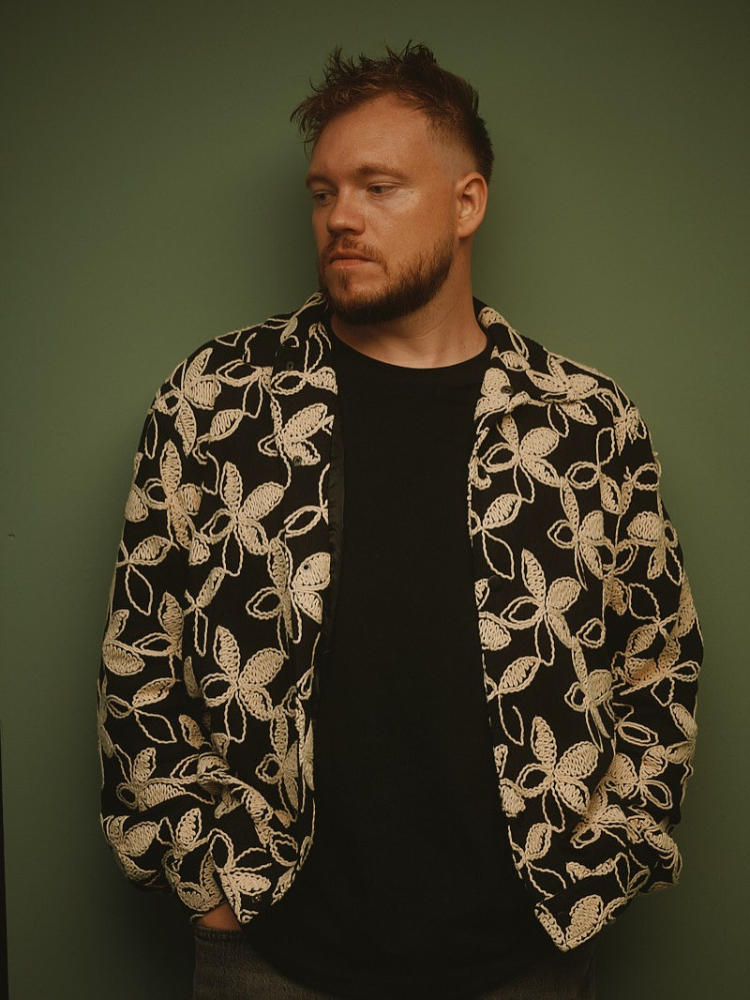

Tour & Gigs 2026
Live
Bevorstehend
Vergangene Gigs
Musikvideo & Live-Momente
Video

Klavier, Gitarre und eine warme, leicht rauchige Stimme.

Bio
Über Gabriel
- Herkunft
- Schweiz, mit irischen & ungarischen Wurzeln
Live-Impressionen
Galerie

Gabriel Benedek
Hören & folgen